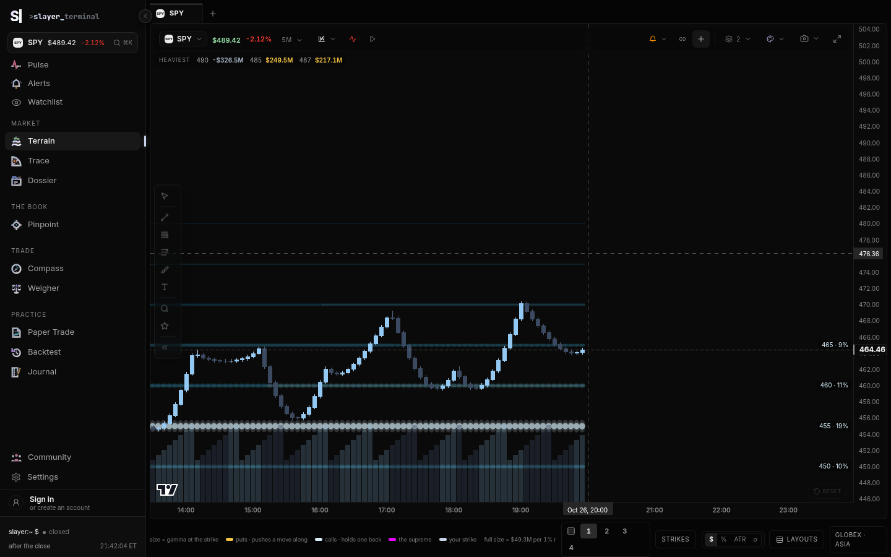

Slayer terminal · Terrain · part 3
How the beads on the tape are chosen, sized and coloured today, where QuantData’s Interval Map is ahead, and the filter Zak was given — corrected where a flat wall or a new maximum would break it.
The thing on the chart is not a bubble chart. It is a ribbon of beads, one per strike per time slot, painted under the candles by GexTrailsPrimitive in slayer/src/components/gex/gexNodesPrimitive.ts. StrikeChart.tsx owns when it updates. The numbers come from uwBook.ts historyFrom, then aggregateSnapshots in data/timeframe.ts.
StrikeNode per strike in nodeFrom (uwBook.ts around line 171). Both legs are negated. Gamma is then scaled by spot² × 0.01 so the number is dollars per 1% move. If the live spot-exposures rows answer, they replace gamma only. Delta, vanna and charm stay on the snapshot rows. That replacement is the strike’s own gamma at the vendor’s price, not a curve of “if spot were here.”historyFrom (around line 739) does not store the day as it happened. It walks today’s open interest backward off the volume, then forward again as a straight line from the open to the close, and multiplies the current net by that fraction. Every strike’s shape through the day is the same ramp. A node that “grows” on the tape is that ramp, unless the live book is being refreshed and the last column is the real print.TRAIL_TEXTURE_MINUTES in StrikeChart.tsx, line 932). aggregateSnapshots keeps the peak minute inside each bucket, per strike, not the average. A mean was tried and rejected because it ironed the ribbon flat.setData on the primitive (around line 795) takes those snapshots plus the greek: gex, dex or vex. Vanna and charm are on the chain and on the calendar. They are not a bead greek. Color, vomma, speed, veta and zomma exist as a separate surface in data/greekSurfaces.ts. They are not on the tape.The header price and the candle price are still two books. Part 1 owns that. On this render the candles printed 464.46 and the header printed $489.35. The bead scale below is the synthetic chain, not a market print.
columnAt (around line 851) ranks every strike in the column by absolute value and keeps twelve (TOP_N). A bead whose strength is under 0.08 is then dropped (MIN_STRENGTH). Strength is absolute value divided by the reference, capped at 1. The reference is not the column’s own maximum and not the single strongest node. It is the 85th percentile of each column’s maximum, across the snapshots in hand (setData, the sort at line 829). A focused strike is added back even if it missed the twelve, so a click does not punch holes in that strike’s history.
That is already a filter. It is not the peak rule. The twelfth strike can be noise sitting between two real shelves, and a flat shelf of eight equal strikes can fill the twelve and push a sharper strike off.
Size is vertical. The bead is as wide as its time slot. Height runs from 0.45px to 60% of a bar, and never more than 9px. The curve is strength to the power 1.6, so weak beads stay hairlines and only the heavy ones swell (gexNodesPrimitive.ts around lines 204–209 and 302–309). Core opacity is 0.16 plus half the curved strength. Under a hover the other beads drop to 60% of that (HOVER_KEEP). A focused strike dims everyone else to 30%.
Colour is the side, then the identity. Positive value is put-dominant and walks the ember ramp. Negative is call-dominant and walks the glacier ramp. The field file still paints today’s call wall in green #30D158 and the put wall in red #FF3B30 (lines 41–42), and the supreme in magenta. Part 2 measured the rung palette, which has already moved the walls to glacier and ember. The beads did not follow. The flip is one dotted grey tick per column at today’s flip price only. It does not draw yesterday’s flip.
On the synthetic 5-minute pane the legend read, in the page’s own words: “size = gamma at the strike”, “puts · pushes a move along”, “calls · holds one back”, “full size = $49.3M per 1% move”. That $49.3M is the 85th-percentile reference, printed so the reader can see what “full” means.
Intervals are the chart’s intervals, with the bead clock capped at five minutes. There is no 2, 3 or 4 minute aggregator, and no date picker. History is one session, reconstructed. QuantData’s nine months are not in this path.
Hover is one bead, not the whole strike. The bead gets a ring. A veil dims the field. The card (StrikeChart.tsx around line 5277) shows the greek in dollars, its share of the book at that moment, the change since the open, and one sentence: puts push a move along, calls hold one back. A click pins the card and adds rank and the half hour before. The pointer pass for this brief did not land on a bead — they are hairlines until they swell — so the card was not in the screenshot. The code path is the one above. The second shot is the same pane with the pointer on the plot.

A replay scrub already pushes the same primitive (StrikeChart.tsx around line 4071). Part 1 described replay. What it does not do is mark the minute a node was born.
Part 2 timed this paint. On a four-pane tick burst, drawImage was 368ms of profile self time and ellipse 42ms. The primitive already caches the bitmap, binary-searches the visible columns, and skips slots under about 3px. That is the performance floor. This brief does not re-measure it.
QuantData’s Interval Map, from the 25 Apr 2025 help note Zak pasted: a bubble per strike per interval, price line on top, GEX, DEX, VEX and CHEX. Their VEX is vanna. Their CHEX is charm. Terrain’s VEX is dollar vega, and vanna is a different number that the beads do not draw. Using their words on Terrain’s toggle would swap two greeks.
| Piece | Interval Map | Terrain beads |
|---|---|---|
| Shape | Bubble. Size is magnitude. | Ribbon bead. Width is the time slot. Height is strength^1.6. |
| Exposures | GEX, DEX, VEX = vanna, CHEX = charm. | GEX, DEX, dollar vega. Vanna and charm are on the chain, not on the bead toggle. Higher greeks are a different surface. |
| Intervals | 1, 2, 3, 4, 5, 10, 15 and more. | The chart’s interval. Bead clock never finer than 5 minutes. No 2, 3 or 4. |
| History | A session picker, up to about 9 months. Empty means today. | One session. The path through the day is an open-interest ramp, not stored minutes. |
| Raw vs difference | Raw by default. Difference is the change in the interval: new risk or an unwind. | Raw only. The ramp can look like a difference and is not one. |
| Colour | Green positive, red negative. | Ember puts, glacier calls, on a strength ramp. Walls on the field are still green and red. Part 2 owns the rung palette. |
| Price | A line over the bubbles. | The candles are the price. The flip is a dotted tick at today’s flip only. |
| Zoom | A slider on the time window. | The chart’s own pan and zoom. Dense columns drop every nth bead. |
| How many strikes | A control. | Fixed at 12, then an 8% floor. No control. |
| Tooltip | Strike and the value, or the diff. | Strike, dollars, share of the book, change since the open, one sentence. Click keeps it. Easy to miss. |
| Playbooks | Rejection at large negative gamma, support at large positive, a break through negative gamma accelerates, compression between positive below and negative above, a new bubble is fresh size. | The card says push or hold. It does not name rejection, absorption or a break. Nothing marks a bubble being born. |
Their case (SPY 23 Apr 2025, positive gamma stacked under 540, a negative ceiling near 544–545) is the picture Terrain’s ribbon is already trying to be: shelves you can see against the candles, on the price scale. They are ahead on history, on a real difference, and on naming the play. Terrain is ahead on sitting in the candle pane, on a scale that is not “this column’s max,” and on a card that says what the side does. The bead file’s green and red walls fight the glacier and ember side ramp. That is the colour argument their own green-versus-red bubbles also lose, and part 2 already measured it for the rungs.
The rule: a strike larger than its same-sign neighbors, and at least 20% of the strongest. The instinct is right. Twelve-by-absolute-value draws shoulders. A local peak is what a trader means by a node.
It breaks in four places.
The 20% floor is right as a fade threshold and wrong as a delete threshold. Early in the session the strongest node is small. Twenty percent of a small number still draws dust. Twenty percent of the close, applied backward, hides the morning.
Gamma does swell into the close. Scaling each column to its own max hides that swell. That half of the advice is right, and Terrain already refused per-column scaling. The reference is the 85th percentile of column maxima, so a wall can grow from a hairline to a rail across the day.
Scaling to the single strongest 0DTE node is the part that jumps. The moment a new maximum prints, every bead in the session is recomputed against it. setData already drops the column cache when ref changes (line 839), so a percentile shift repaints the whole day. A single maximum does that harder, and it does it at the open in the other direction: the first prints are the max, everything looks full, and the afternoon shrinks the morning if you recompute history against the new max. 0DTE and the monthly book also do not share a maximum. A monthly shelf will look like nothing next to a 0DTE pin, which is sometimes the point and sometimes a lie.
Right, and half done. Opacity already carries most of the fade, and strength^1.6 keeps weak beads thin. MIN_STRENGTH then deletes anything under 8% instead of leaving a whisper. Deleting is what makes a plateau disappear at the edges. Fade to a floor. Delete only when the strike is neither a peak nor on a plateau and the reader has asked for peaks only.
Right, and it is already how the beads work. nodeFrom reads that strike’s own call and put rows. It does not ask “what would net gamma be if spot were this price.” The spot-shifted curve is the flip profile. Part 1 owns the flip. Do not replace the beads with it. A bead answers “how much hedging sits at 450.” A flip curve answers “what is the book’s sign if we trade at 450.” Both belong on the desk. They are not the same picture.
The higher greeks in buildGreekSurface are also per strike, evaluated at the current spot and that strike’s expiry. They are not on the beads. Putting them on the beads should keep the per-strike reading. One correction: exposureAt gives puts the opposite sign of calls. nodeFrom negates both legs, because the dealer is short both. A color bead drawn with the exposureAt sign will disagree with a gamma bead on a put-heavy strike. Use the gamma convention for every greek on this field.
Split expiries first. Inside one expiry, walk strikes that are one step apart. A strike is a peak if it is strictly above both same-sign neighbors, or it sits on a plateau whose outside neighbors are lower. Keep peaks at full opacity. Draw the rest faded, and drop them only under 8% of the scale when the reader has turned peaks on. The scale is the 85th percentile Terrain already computes, ratcheted up for the session and never revised down, and it is computed per book (0DTE separate from the rest). “Twenty percent of the strongest” becomes twenty percent of that ratchet, as the point where fade ends and full ink begins, not as a delete line.
type Node = { strike: number; value: number; expiry: string };
export function peaks(nodes: Node[], step: number, scale: number) {
const byExp = new Map<string, Node[]>();
for (const n of nodes) {
const row = byExp.get(n.expiry) ?? [];
row.push(n);
byExp.set(n.expiry, row);
}
const kept: { n: Node; peak: boolean; t: number }[] = [];
for (const row of byExp.values()) {
row.sort((a, b) => a.strike - b.strike);
for (let i = 0; i < row.length; i++) {
const n = row[i];
const left = row[i - 1];
const right = row[i + 1];
const near = (o?: Node) => !!o && Math.abs(o.strike - n.strike) <= step * 1.01 && Math.sign(o.value) === Math.sign(n.value);
const L = near(left) ? Math.abs(left!.value) : -Infinity;
const R = near(right) ? Math.abs(right!.value) : -Infinity;
const a = Math.abs(n.value);
// plateau: equal to a same-sign neighbor, and the shelf beats the outside
const plateau = (near(left) && a === Math.abs(left!.value)) || (near(right) && a === Math.abs(right!.value));
const peak = (a > L && a > R) || plateau;
const t = scale > 0 ? Math.min(1, a / scale) : 0;
if (t < 0.08 && !peak) continue;
kept.push({ n, peak, t });
}
}
return kept;
}
/** Session scale. Only moves up. One ratchet per book (0DTE, and the rest). */
export function ratchet(prev: number, columnMaxes: number[]): number {
const s = [...columnMaxes].filter(v => v > 0).sort((a, b) => a - b);
const p85 = s.length ? s[Math.min(s.length - 1, Math.floor(s.length * 0.85))] : 0;
return Math.max(prev, p85);
}
Wire peaks in where columnAt slices TOP_N. Pass this.ref as scale until the ratchet replaces it. Full opacity at t >= 0.2. Below that, core alpha floors at about 0.12 instead of the bead being removed. Expected result: a three-strike wall stays a wall, a new afternoon maximum does not resize the morning, and 0DTE no longer sets the size of the monthly shelf.
Dealer sign for this field: short the call and short the put. Both legs negative, which is what nodeFrom does. Dollars, not shares. Do not use exposureAt’s flipped put until that function grows a “short both” mode. Live means “once a minute on the strikes you draw.” A worker is for a stored history of months, not for today’s chain.
How many dollars of underlying the dealer must trade to stay hedged if the underlying moves 1%. A negative shelf (call-heavy, in this sign) is where a rally runs into supply. A positive shelf is where a drop runs into demand. Display it as the bead height. The legend already says “per 1% move.”
const perPct = spot * spot * 0.01; const call = -vendor.call_gex * perPct; // vendor is shares, unsigned const put = -vendor.put_gex * perPct; const gex = call + put;
Cheap. The vendor sends it. The live spot-exposures row is the one to prefer, because the morning snapshot is priced at the morning spot. Part of uwBook.ts already does this swap for gamma only.
Which way the dealer leans. Negative net delta means they are short delta and buy dips less than they sell rips, or the reverse of whatever the sign says once you remember they are short options. Display it as a small arrow on the bead, not as a second ribbon. Two ribbons on one candle is the heatmap problem the Interval Map also has when four greeks share green and red.
const dex = (-vendor.call_delta - vendor.put_delta) * spot; // dollars per $1
Cheap. Already on the snapshot and already a bead greek. The surface file calls the unit “1σ” and nodeFrom multiplies by spot. Those two sentences disagree. The bead should say “per $1” until someone measures it against the vendor’s own dollar delta. Do not invent a second conversion.
How much the dealer book gains or loses when implied vol moves one point. Dealers are short options, so both legs are short vega: a vol spike hurts. This is not vanna. QuantData’s VEX is vanna. Label this “vega $” on the toggle or the two products will be compared on the wrong number.
const call = -oiCall * 100 * vegaCall; // dollars per 1.00 of vol const put = -oiPut * 100 * vegaPut; const vex = (call + put) / 100; // per vol point
The code in foldContracts multiplies by about −0.55 instead of −1 (CALL_VEGA, PUT_VEGA). That is a haircut, not a sign. Say so in the legend (“dealer weight 0.55”) or drop it and use −1. Cheap once the contracts have been read. The bead path already carries vex on each historical level.
Shares the dealer must buy or sell when implied vol drops one point. Into a rally that is also a vol crush, vanna is often why the bid appears above a gamma shelf. Display as a tint on the gamma bead, not a second size. Size stays gamma. Tint says whether a vol drop makes them buy.
const vanna = (-vendor.call_vanna - vendor.put_vanna) * spot * 0.01; // $ per vol point
Cheap. On the chain today (netVanna). Not on GexLevel, so the history ramp does not carry it. Add the field next to dex and vex before drawing it through time.
Shares the passing session forces the dealer to buy or sell, even if price does not move. This is the afternoon bid under a pin. Display as a clock mark on the bead after 15:00 New York, not as height.
const charm = (-vendor.call_charm - vendor.put_charm) * spot / 252; // $ per session
Cheap. Same gap as vanna: on the chain, not on the historical level.
How fast that strike’s gamma is growing or dying as the session runs. This is the reason a 0DTE shelf looks bigger at 15:30 than at 10:00 even when open interest did not change. Display as the change in bead height across the afternoon, and as a word on the card (“gamma still building”). Do not draw it as its own ribbon on top of GEX.
const g = higherGreeks(spot, strike, yearsLeft, iv).color; // per year const perSession = perDay(g); // / 252 const dollar = (-1) * perSession * (callOI + putOI) * 100 * spot * spot * 0.01;
One Black-Scholes evaluation per strike. Thirty strikes is nothing, once a minute, on the main thread. A year of stored minutes is a nightly job, not a hover. buildGreekSurface already evaluates it and then flips the put sign. Use the snippet’s short-both sign on the beads.
Whether a vol spike feeds itself. Large short vomma means the vega they are already short gets shorter as vol rises. Display as a warning dot on the strike, not as size. One dot for the book is enough if every strike agrees. Per strike only when one strike carries it.
const perPoint = perVolPoint(higherGreeks(spot, strike, yearsLeft, iv).vomma); const vomma = -perPoint * (callOI + putOI) * 100; // $ vega per vol point, short both
Same cost as color. Not on the bead path.
How fast the gamma at this strike changes when price moves a dollar. This is the air pocket: price breaks the shelf and the shelf itself moves away. Display as an arrow on the card (“wall moves up with price”), not as a bead. The bead is where the wall is. Speed is where it is going.
const speed = -higherGreeks(spot, strike, yearsLeft, iv).speed * (callOI + putOI) * 100; // then × spot² × 0.01 if the card should read "per 1% per $1"
Same cost. Live is fine for the visible strikes.
How much vega the dealer sheds per session as time passes. It is the charm of vega: the urge to roll or to buy back vol into the close. Display on the vega bead as a second line in the card, “sheds $X of vega today,” not as height.
const veta = -perDay(higherGreeks(spot, strike, yearsLeft, iv).veta) * (callOI + putOI) * 100;
Same cost. Precompute if you store it for the nine-month picker. Do not precompute for today.
How this strike’s gamma changes when vol moves one point. A shelf that only exists because vol is low will vanish in a spike. Display as a note on the gamma card when a 1-point vol move would cut the bead in half. That sentence is the whole UI.
const zomma = -perVolPoint(higherGreeks(spot, strike, yearsLeft, iv).zomma) * (callOI + putOI) * 100 * spot * spot * 0.01; // $ per 1% per vol point
Same cost. The five higher greeks together, on the strikes you actually draw (the peaks, not every strike in the book), are one small loop per minute. A worker is justified only when the date picker asks for months of them. Store the peaks, not the grid.
The 85th percentile is the right idea and it still moves. When it moves, setData throws away every column. A ratchet that only rises, one for 0DTE and one for the rest, stops the jump the advice would have made worse. Files: gexNodesPrimitive.ts setData. Snippet in section 3. The legend already prints the reference. Print “scale locked at $49M” once it has ratcheted, so a reader trusts that full size means the same thing at 10:00 and at 15:30.
Section 3. Replace the blind top-twelve with peaks. Fade the rest. A control can still raise the cap, which is the Interval Map’s strike-count slider, without making twelve a magic number. Files: columnAt.
Their difference mode is the change in exposure during the interval. Terrain’s history is a straight line through open interest, so a “difference” of that line is just the slope you assumed. Store the last real chain each minute (the live spot-exposures row already arrives about once a minute) and subtract.
const diff = strikes.map(s => ({
strike: s,
value: (now.get(s) ?? 0) - (prev.get(s) ?? 0),
}));
Files: a ring buffer next to historyFrom, and a raw/diff toggle beside the greek toggle in StrikeChart.tsx. Draw diff as a hollow bead so it cannot be mistaken for the level itself. A positive diff on a negative shelf is new short gamma. That is the “sudden bubble” their playbook describes, and it is measurable only if you kept the previous minute.
One net number adds a monthly shelf to a 0DTE pin and calls the sum a node. Split before the peak walk. Draw 0DTE at full ink and the rest of the book as a thinner bead behind it, or offer the split as a toggle. Files: historyFrom currently folds one chain. The per-expiry rows already exist on the book (uwByDate). Pass two snapshots into setData instead of one.
trails.setData(zeroDte, scale0, true, barSec, greek); trails.setBack(rest, scaleRest); // thinner, never sets the scale
Their playbook’s last line — a new bubble is fresh size — is an event, and neither product marks it. On each new column, for each peak: born if it was absent, grew if it crossed 20% of scale, flipped if the sign changed, died if it fell out of the peak set. A tick on the time axis, and the alert kinds that already exist for a wall move. Part 1 asked for an alert from the rung card. This is the bead’s own event, not that alert.
if (prev.sign !== 0 && Math.sign(now) !== prev.sign) emit({ kind: 'flipped', strike, time });
if (!prev.peak && peak) emit({ kind: 'born', strike, time });
Files: a pass beside columnAt, a marker primitive, alertStore.ts for an optional arm. The card then has something to say that the Interval Map tooltip does not: “born 11:40, flipped 14:05.”
Once a peak has a price, the candles already know what happened. If the bar’s wick tagged the strike and closed back through it, rejected. If it closed beyond and the next two bars did not return, broke. If it sat on it and the bead was positive gamma, absorbed. One word, drawn at the tag, not a new study. Files: the same marker pass, reading displayBars. Their SPY case (rejected at 544–545) would have been a label instead of a paragraph in a help article.
A score on the pinned card: fraction of the session the strike was a peak, and its average strength. That is persistence. A strike that is a peak for six hours is a level. A strike that peaks once is a print. No new paint. Files: the event pass, the bead card in StrikeChart.tsx.
const score = minutesAsPeak / minutesInSession; // 0–1, shown as "held 4h 10m"
priceToCoordinate(strike) places every bead. Alignment with the candles is not the missing feature. The missing feature is a label when the bead and the candle disagree because the header is a different book. Part 1 owns the two books. Do not build a second coordinate system.
Size stays one greek. A second greek as colour on the same bead is readable. Charm after noon, or vanna when a vol drop is the question. Two sizes is not readable. Files: columnAt gains an optional tint, the legend gains one line. The higher-greek loop in section 4 supplies the number.
Part 1 asked for a regime sentence in the header. The bead version is a wash behind the candles while the book is short gamma, and nothing while it is long. One rectangle from the flip to the edge of the pane, at low opacity, using the sign the Map already computes. Files: the flip tick that is already drawn per column can become a fill on the short side only. Do not add a second heatmap.
The ribbon is the right default. A heat block is what you want when you are counting strikes, and it is what their bubbles become when you zoom out. A toggle that draws the same peaks() result as a 1px row instead of an ellipse. Files: the round branch in the renderer already switches hairlines to rects. Expose it. Do not add a third palette.
Replay already feeds the primitive. Add the event ticks to that scrub so playing the day shows births and flips, not only a swelling ribbon. Files: ReplayStrip marks, which the chart already accepts as replayMarks. The work is filling that array from the event pass. Part 1 described the transport. This is the marks.
Today’s visible beads are capped and cached. The cost that grows is storing months. Keep the on-screen rule: only peaks, only the visible time range, bitmap cache stays. For the date picker, precompute peaks per session overnight and ship a few dozen nodes a day, not every strike every minute. A worker is that job. It is not the live minute. Part 2’s paint numbers are the reason not to put ten greeks on every hairline.

JPMorgan’s derivatives strategists, in the note Zak clipped, have stopped using an open-interest proxy for S&P 500 gamma and moved to a flow-based book. The feed is Cboe’s, and it says whether the client bought or sold. That is the same hole this desk already wrote down on 3 Oct 2026 in slayer/docs/signed-book-spec.md, before any of that code existed. The engine is still pinned. Nothing in that spec has been built. This section is how it lands on the beads, and which feed Zak can actually buy.
Open interest says how many contracts exist. It does not say who is long them. A gamma level built from it has to assume the dealer’s side. The usual retail assumption is that customers buy puts and sell calls, so the dealer is short calls and long puts. Terrain’s own prior is the other shortcut, and it is still a shortcut: nodeFrom negates both the call leg and the put leg, and the engine’s fallback (signed-book-spec.md §2) is “short about 55% of the calls and 53% of the puts.” Both versions are wrong wherever customers bought calls, which is most 0DTE, and wherever they sold puts. The call wall, the put wall and the flip inherit the error. Part 1 owns the fact that Terrain’s flip and the Map’s flip already disagree. A wrong sign makes that disagreement structural.
The second flaw is the clock. Official open interest prints once a day, after the close. A bead built from it cannot show a position that was opened at 10:15 and closed at 14:00. historyFrom draws a straight line from yesterday’s open interest to today’s and calls that the day. It is a picture of the assumption, not of the trades.
Signed flow fixes the side. Each print is marked customer-bought or customer-sold. The dealer is the other side. Add those contracts to a running inventory and the greek at the strike is the greek of that inventory, with the same per-strike scaling as section 4. The level can move at 10:16. On a 0DTE strike the day’s prints are most of the position, so the open-interest proxy is not a rough copy of the truth. It is a different book.
| Feed | What it tells you | Cost, as far as this repo knows | Realistic now |
|---|---|---|---|
| Cboe Open-Close, and Trade Alert on top of it | Customer, firm, and market maker, each split into buy and sell, and into open and close. This is the feed the JPMorgan note is describing. | Not priced anywhere in the repo. It is an exchange license, sold to a desk, not a key in an env file. Do not budget it as Theta’s plan. | Not this month. It is the ground truth to buy when the signed book has earned a vendor contract. Until then, do not pretend another feed is this one. |
| OPRA trades against the NBBO | At or above the ask, the customer bought. At or below the bid, the customer sold. A midpoint print has no sign. No open-or-close flag. OPRA does not carry one. | ThetaData Options Standard is listed in docs/launch-costs.md at $80 a month, read 17 Sep 2026, personal use, trades and tick quotes back to 2016. Commercial display is a different license. Massive Options Advanced is listed at $199 a month and has less history. | Yes, if the quote is joined to the print. The method is already written: signed-book-spec.md §3. The code is not. Part 2’s note still holds: Terrain does not call Theta today. |
| Unusual Whales, the fields already on the tape | The contract route carries tags of ask_side, bid_side, mid_side and no_side, plus nbbo_bid, nbbo_ask and the quote times. The minute route carries volume_ask_side and volume_bid_side. upstream_condition_detail and report_flags mark sweeps, multi-leg prints and compression. There is no customer-versus-firm flag and no open-versus-close flag. | The whale key the desk already uses. No new contract for a prototype. | Yes, as a prototype on the names whose prints Terrain already stores. Flow alerts are a filtered list, not the tape. The contract route is capped. An SPX book built only from alerts will miss most of the day and should be labelled that way. |
| ThetaData, as a terminal | Trades and NBBO, so the same quote rule can run locally and be stored. Still no open-or-close flag. First-order greeks and open interest are on the plan. Color, vomma, speed, veta and zomma are not a Theta column. Those stay the Black-Scholes pass in section 4. | The $80 figure above, plus the commercial step when a customer sees the number. | The right history tape once the prototype’s signs beat the prior. Not the first week. The proxy in server/thetaProxy.mjs only forwards to a local jar. It does not sign a book. |
The order is the one the spec already chose. Classify the prints Terrain already has, using sideOfTags and quoteNoReadOf in src/data/traceLive.ts. If that book ranks the next half hour better than the open-interest prior, on the test in signed-book-spec.md §8, then pay for Theta’s quotes and store them. Buy Cboe Open-Close when the estimate needs a ground truth, not before.
Start from yesterday’s open interest. That number is still unsigned, so the overnight position keeps the old prior, and the screen says so. From the open, each print adds or subtracts.
Customer bought, dealer sold: the dealer is shorter the option by the size. Customer sold, dealer bought: the dealer is longer. That direction does not depend on whether the customer was opening or closing. A buy-to-close and a buy-to-open both leave the dealer shorter. Open versus close changes open interest, not the hedge. OPRA cannot tell them apart. The net of the day is the honest substitute, which is §4 of the spec. When a Cboe flag exists, use it for two things only: drop market-maker against market-maker, and let an opening trade change the baseline open interest while a closing trade does not.
Spreads: printCondition already marks multi-leg and compression (cbmo, mctp). Compression is not a bet. Leave it out. A spread leg filled at a package price gets half the sign, pulled toward “no sign,” which is the spec’s rule. Do not let one leg of a conversion open a gamma wall.
import { printCondition, quoteNoReadOf, sideOfTags } from './traceLive';
type Lot = { strike: number; expiry: string; right: 'C' | 'P'; dealer: number; signed: number; unsigned: number };
function applyPrint(book: Map<string, Lot>, row: Record<string, unknown>, key: string, strike: number, expiry: string, right: 'C' | 'P') {
const price = Number(row.price), bid = Number(row.nbbo_bid), ask = Number(row.nbbo_ask);
const at = Date.parse(String(row.executed_at ?? ''));
const cond = printCondition(row);
if (cond.compression || cond.cross) return;
const noRead = quoteNoReadOf(row, price, bid, ask, at);
const side = noRead ? 'MID' : sideOfTags(row.tags, price, bid, ask);
const w = side === 'ASK' ? 1 : side === 'BID' ? 0 : 0.5;
const weakened = cond.multi ? 0.5 + (w - 0.5) / 2 : w;
const signed = (2 * weakened - 1) * Number(row.size); // >0 customer bought
const lot = book.get(key) ?? { strike, expiry, right, dealer: 0, signed: 0, unsigned: 0 };
lot.signed += signed;
lot.unsigned += Number(row.size);
lot.dealer = -lot.signed; // dealer takes the other side, in contracts, since the open
book.set(key, lot);
}
// Overnight baseline stays the prior. Today's dealer contracts are lot.dealer.
// Flow GEX uses section 4's per-strike scaling on that inventory, not on open interest.
function flowGex(lot: Lot, gammaPerContract: number, spot: number) {
return lot.dealer * gammaPerContract * 100 * spot * spot * 0.01;
}
DEX, vanna and charm use the same lot.dealer and the same per-contract greek as section 4. One inventory, four numbers. Color and the other higher greeks stay off the live path until the first four are on the card. Files: a signedBook.ts next to contractflow.ts for the session map, traceLive.ts for the side it already computes, and uwBook.ts only as the source of yesterday’s open interest. Do not fold this into historyFrom. That function is the proxy. The flow book replaces it when the toggle says so.
A toggle, not a quiet swap. Raw open-interest beads stay the default until the signed book has beaten the prior on the test in the spec. The toggle sits with the greek toggle in StrikeChart.tsx. Off, today’s picture. On, bead height is flowGex. The legend says “flow, since the open” or “open interest, assumed short both.”
Disagreement is the signal. Where the two signs match, say nothing. Where they do not, the card says “open interest says short gamma, the tape says long” and the bead is drawn hollow. That hollow is a better use of the difference-mode idea in section 5 than subtracting two open-interest ramps. The quality word from the spec — strong, good, caution, poor, from how much of the size was at the bid or the ask rather than the mid — is the only grade. No public digit.
const oiSign = Math.sign(oiGex); const flowSign = Math.sign(flowGex(lot, gamma, spot)); const disagree = oiSign !== 0 && flowSign !== 0 && oiSign !== flowSign; const q = lot.unsigned > 0 ? Math.abs(lot.signed) / lot.unsigned : 0; const word = q >= 0.7 ? 'strong' : q >= 0.5 ? 'good' : q >= 0.3 ? 'caution' : 'poor';
Births from flow. A peak that appears because lot.dealer crossed the scale, and was not a peak on the open-interest book, is a flow birth. That is the “sudden bubble” in the Interval Map playbook, with a cause. Section 5’s born, grew, flipped and died events should fire off this inventory once the toggle exists, and off the open-interest ramp until then.
Walls and the flip. The spec already picks them off signed dealer gamma: the call wall is the largest positive dealer gamma above spot, the put wall the largest positive below, the flip where the cumulative sum changes sign. That replaces the side-of-spot rule part 1 already flagged. Do not ship the new walls on the rungs until the behavioural test in the spec passes. Until that day the flow number is a second read on the card, not the line on the chart.
quoteNoReadOf already refuses a crossed quote and a quote older than five minutes. Keep that refusal.cbmo and mctp. The Trace audit already found one compression print that read as hundreds of millions of bullish premium.report_flags includes cross_trade) was arranged. It is not someone lifting the ask. Leave it out of the inventory, the way printCondition already flags it.Effort for the toggle, on the prints already classified, is medium: one session map, the card, the hollow bead. Impact is high, because it is the difference between a level and an assumption, which is the gap JPMorgan just paid to close. Wiring Theta’s history and running the two-year test is large. Buying Cboe Open-Close is a contract, not a pull request. Ranked with the rest below.
Impact 1–5. Effort S = 1, M = 2, L = 3. Sort is impact divided by effort. Items already specified in parts 1 and 2 are not on this list.
| Item | Impact | Effort | Ratio | |
|---|---|---|---|---|
| 1 | Ratchet the 85th-percentile scale, one scale for 0DTE and one for the rest | 5 | S | 5 |
| 2 | Peak filter that keeps plateaus, fade instead of delete | 5 | S | 5 |
| 3 | Label VEX as dollar vega, and give vanna its own name | 4 | S | 4 |
| 4 | Persistence on the pinned card | 3 | S | 3 |
| 5 | Short-gamma wash behind the candles | 3 | S | 3 |
| 6 | Event marks on the replay scrub that already exists | 3 | S | 3 |
| 7 | Signed dealer inventory from prints already classified, and an open-interest versus flow toggle | 5 | M | 2.5 |
| 8 | Real minute-to-minute difference, drawn as a hollow bead | 5 | M | 2.5 |
| 9 | Draw 0DTE in front of the rest of the book | 4 | M | 2 |
| 10 | Born, grew, flipped, died — a tick plus an optional alert | 4 | M | 2 |
| 11 | Heat-row toggle using the same peaks | 2 | S | 2 |
| 12 | Rejected, absorbed, or broke through, read off the candles | 3 | M | 1.5 |
| 13 | Charm or vanna as tint, gamma as size | 3 | M | 1.5 |
| 14 | Color, vomma, speed, veta and zomma on the peak’s card, short-both sign | 3 | M | 1.5 |
| 15 | Cboe Open-Close as the ground truth, once it is a contract rather than a guess | 5 | L | 1.7 |
| 16 | Precompute peaks for a multi-month picker | 3 | L | 1 |
The first afternoon is rows 1, 2 and 3. They are the advice, corrected, plus the naming bug that would make a comparison with QuantData false. Row 7 is the flow book, tied with difference mode: it uses prints the tape already classifies, and it does not wait on a Cboe contract. Difference mode, the 0DTE split, and the birth and flip ticks are the rest of that release. Those ticks are what make the playbook visible instead of a help article. Row 15 is the same idea on the exchange’s own open-close flag, and it waits until the estimate has earned the license.
StrikeChart.tsx.